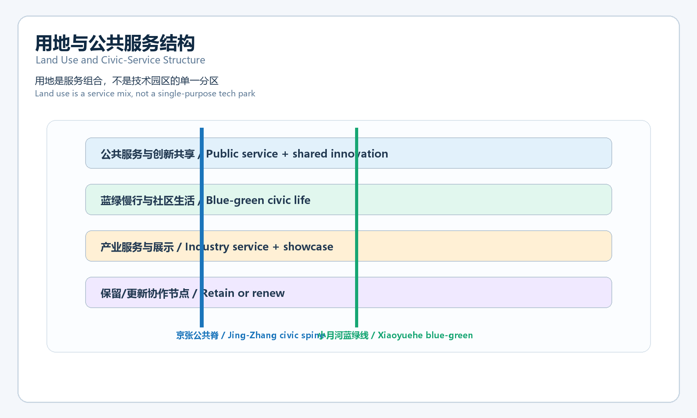
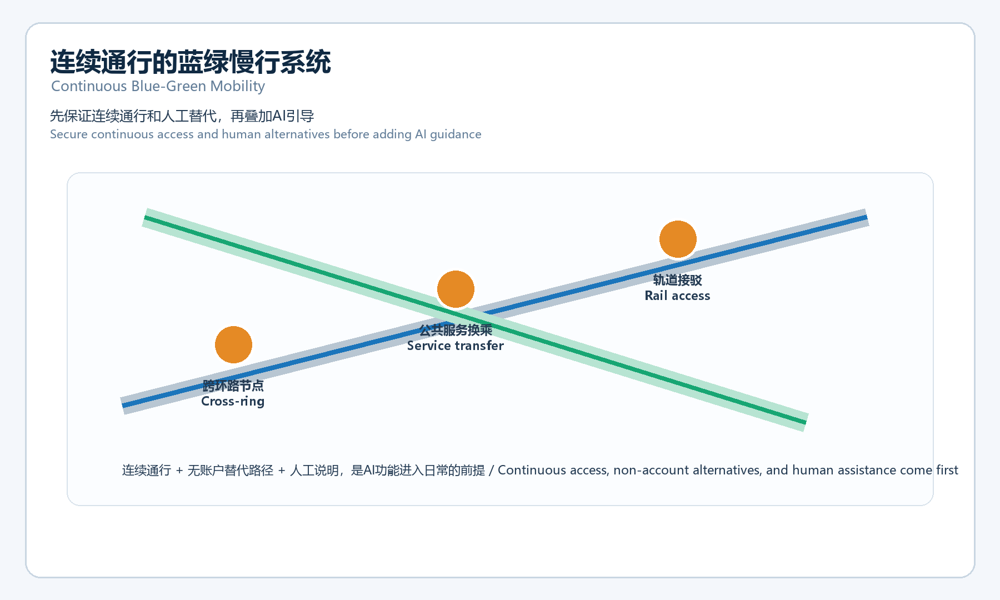
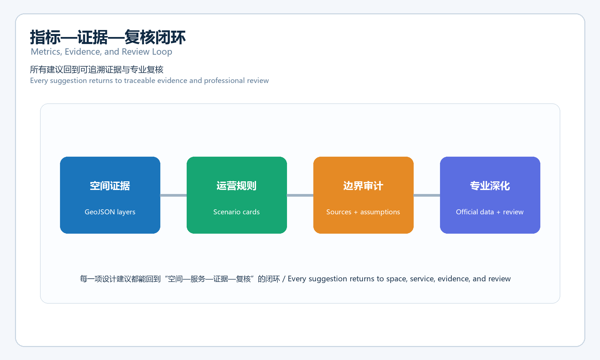

京张共生回路 / Jing-Zhang Civic Loop
面向日常公共服务的AI创新带 / An AI innovation belt for everyday public services
概念建议；临时约束范围；不构成规划批准、建设或运营授权。
Concept proposal; provisional constraint; not an approval or implementation authorization.
总览地图 / 三层范围 / 重点区域 / 用地分区 / 交通慢行 / 蓝绿公共空间 / 建筑 / 更新项目 / AI 场景
三层范围、重点区域、用地分区、交通慢行、蓝绿公共空间、建筑、更新项目和 AI 场景均以概念建议表达；不构成法定控制。
核心图件 / Evidence figures
 三核一带 / Three nodes, one belt
三核一带 / Three nodes, one belt
用地与公共服务 / Land use and civic service 三处重点区 / Three key areas
三处重点区 / Three key areas
连续通行 / Continuous mobility
指标证据闭环 / Metrics and evidence核心指标 / 任务覆盖 / 自检状态
site_area_sqm = 11412825.386 sqm · green_ratio = 0.123423 · public_space_ratio = 0.073281
任务覆盖：公告 1.3 / 1.4 / 1.5 与 agent.1-agent.6；自检状态：待最终自检写入。
审阅入口 / Review entry
空间证据在 GeoJSON，指标在 metrics.json，来源与假设分别在 sources.json 与 assumptions.json；正式边界到位后需整体重算。